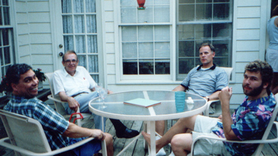

Gary Gerber
19?? - ?
Gary Gerber was the son of Earl Gerber. He married Ann and together they had two daughters. Together they made their home in Alpharetta, GA.

Gary with family in the Summer of 2000. (L to R) Ray, Richard, Gary and Bradley
Parents:
Earl Gerber
???? - ?
?
Offspring:
Jessica Gerber
199? - ?
Sarah Gerber 1997 - ?
References:
1. Bradley Wogsland
Last changed upon 10 July 2004 by
Bradley Wogsland
.